Palabras claves: PiMax, Fisioterapia Respiratoria Convencional, Threshold IMT
Durante el transcurso del año, los cambios de temperatura y la humedad influyen significativamente en la propagación de enfermedades respiratorias, en los niños más pequeños y en los adultos. La Kinesioterapia Respiratoria es uno de los procedimientos clínicos más frecuentes a la hora de atender los trastornos causados por patologías respiratorias tanto en la atención primaria como en los otros niveles del sistema de salud, por lo tanto es importante conocer la visión que tiene este procedimiento sobre las enfermedades respiratorias tanto como para las personas que estén dentro o fuera del área de la salud.
La Kinesioterapia Respiratoria es la aplicación de distintas maniobras que modifican la biomecánica respiratoria por su acción sobre el tórax, las vías respiratorias y la musculatura que ayuda al parénquima pulmonar a obtener un efecto kinésico-terapéutico. Esto se logra mediante la integración del conocimiento en técnicas Kinésicas por medio del estudio desde la Anatomía hasta la Fisiopatologías del Sistema Respiratorio. Algunas de las maniobras manuales más frecuentes son: Presiones torácicas, Descompresiones, Reeducación diafragmática y de la tos: Tos asistida o estimulada, Aspiración de secreciones bronquiales mediante el uso de bombas de aspiración, reeducación de la musculatura respiratoria, entre otras técnicas.
El tratamiento kinésico respiratorio puede eventualmente realizarse en conjunto con equipos de oxigenoterapia, uso de inhaladores (puff o nebulización) o de espirometría de incentivo respiratorio (Triflow), como también la utilización de dispositivos para el fortalecimiento muscular respiratorio (Threshold IMT). Según evidencias científicas hechas con este dispositivo han dado un satisfactorio resultado para el entrenamiento de fortalecimiento muscular, han demostrado ser efectivo en la reducción de la disnea y una mejoría en la resistencia inspiratoria.
Dentro del trabajo clínico la Kinesiterapia Respiratoria es una de las más potentes aliadas en Medicina Intensiva involucrada en la evaluación y el tratamiento intensivo de los trastornos respiratorios incluyendo problemas pulmonares crónicos, como el asma, bronquiolitis obstructiva, bronquitis crónica, enfisema, fibrosis quística, enfermedad pulmonar obstructiva crónica (EPOC), bronquiectasia, entre muchas otras afecciones del sistema ventilatorio, además se encarga de tratar los componentes de las vías respiratorias agudas. En ciertas épocas del año los kinesiólogos se ven enfrentados a una altísima carga asistencial y que deben atender enormes cantidades de pacientes, muchos de los cuales tienen bronquiolitis, asma, grados variables de hipersecreción, y una gran disminución de fuerza muscular respiratoria.
Finalmente el objetivo concluyente de esta investigación es ver cual es más efectivo para valorar a la fuerza muscular por medio del Threshold IMT por un parte y de otro lado utilizando a los Ejercicios Kinésicos Convencionales.
Las enfermedades respiratorias graves son una de las causas que llevan al paciente a internarse en una Unidad de Terapia Intensiva Adultos (UTIA), según su evolución sea favorable o no, el paciente es derivado a sala común de internación o prolonga su estadía en la UTIA. Dicha evolución es evaluada a través de parámetros tales como: Signos Vitales, Tipo de Respiración, Fuerza Muscular y signos de probables secuelas. Ante esta situación surgen los siguientes interrogantes: ¿Cuál es la importancia de la kinesiología respiratoria y la utilización del dispositivo Threshold IMT como parte del tratamiento efectivo en pacientes con patologías respiratorias que estuvieron internados en la UTIA? ¿La utilización del dispositivo Threshold IMT tiene un resultado de mejoría para la recuperación y reinserción a las actividades de la vida diaria (AVD) del paciente que estuvo internado en la UTIA? ¿Se podría mejorar los resultados del tratamiento paliativo global en pacientes con patologías respiratorias teniendo a kinesiólogos dentro del conjunto multidisciplinario?
La Kinesiterapia Respiratoria se puede definir como el Arte y Ciencia de los Cuidados Respiratorios cuyos ejecutores son los Kinesiólogos, Terapeutas Respiratorios y Fisioterapeutas expertos en: el manejo de la vía aérea, ventilación mecánica, el equilibrio ácido-base, y los parámetros tanto para la intubación y extubación, donde el objetivo principal de la Kinesiterapia Respiratoria es devolver al máximo posible la independencia funcional del paciente, de acuerdo a sus potencialidades.
Los propósitos fundamentales a obtener con la aplicación de la kinesioterapia respiratoria son:
Por otra parte, el dispositivo Threshold IMT proporciona una presión constante y específica para fortalecer y aumentar la resistencia de los músculos inspiratorios, independientemente de la rapidez con la que respiren los pacientes. Teniendo en cuenta todo lo anteriormente citado, seria de suma importancia medir la eficacia obtenida para mejorar la fuerza muscular respiratoria del paciente, tanto de las técnicas convencionales de Kinesioterapia Respiratoria como del uso del dispositivo Threshold IMT.
Una de las principales limitaciones fue el número de casos de pacientes que fueron tratados por medio de la Rehabilitación Respiratoria. Está demostrado que en UTIA disminuye la fuerza muscular por la falta de una buena oxigenación, expansión pulmonar e intercambio de gases, es por ello que la fisioterapia respiratoria se incorpora para la rehabilitación desde la UTIA hasta que el paciente sea trasladado a sala del hospital y educarle junto con los dispositivos para ejercitar su musculatura respiratoria hasta que sea dado de alta total médica y Kinésica.
Las hipótesis estadísticas son presentadas en una forma nula y a partir de ésta última son presentadas dos hipótesis derivadas adaptándose como criterio de aceptación o rechazo el nivel de P igual o inferior a 0.05.
La mayor eficacia fue del dispositivo Threshold IMT vs los Ejercicios Kinésicos Convencionales en pacientes que estuvieron internados en la UTIA del INERAM.
Para llegar a los pulmones el aire atmosférico sigue un largo conducto que se conoce con el nombre de tracto respiratorio o vías aéreas; constituida por:
Es la parte inicial del aparato respiratorio, en ella el aire inspirado antes de ponerse en contacto con el delicado tejido de los pulmones debe ser purificado de partículas de polvo, calentado y humidificado.
El tejido submucoso es muy rico en capilares venosos, los cuales en el lóbulo inferior y en el borde inferior del lóbulo medio constituyen plexos muy densos, cuya misión es el calentamiento y la regulación de la columna de aire que pasa a través de la nariz. Estos dispositivos descritos están destinados a la elaboración mecánica del aire, por lo que se denomina región respiratoria.
En la parte superior de la cavidad nasal a nivel del lóbulo superior, existe un dispositivo para el control del aire inspirado, formando el órgano del olfato y por eso esta parte interna de la nariz se denomina región olfatoria; en ella se encuentran las terminaciones nerviosas periféricas del nervio olfatorio, las células olfatorias que constituyen el receptor del analizador olfatorio.
Es la parte del tubo digestivo y de las vías respiratorias que forma el eslabón entre las cavidades nasal y bucal por un lado, y el esófago y la laringe por otro. Se extiende desde la base del cráneo hasta el nivel de las VI-VII vértebras cervicales. Está dividida en 3 partes: porción nasal o rinofaringe, porción oral u orofaringe, porción laríngea o laringofaringe.
Excepto durante la deglución, las paredes anterior y posterior de este segmento, están aplicadas una a la otra, separándose únicamente para el paso de los alimentos.
Es un órgano impar, situado en la región del cuello a nivel de las IV, V y VI vértebras cervicales. Por detrás de la laringe se encuentra la faringe, con la que se comunica directamente a través del orificio de entrada en la laringe, por debajo continúa con la tráquea. Está constituido por una armazón de cartílagos articulados entre sí y unidos por músculos y membranas. Está formado por los cartílagos tiroides, cricoides y aritenoides (cartílagos hialinos), por la epiglotis (cartílago elástico) y los cartílagos accesorios de Santorini y Wrisberg (cartílagos fibroelásticos, sin importancia funcional).
A la entrada de la laringe se encuentra un espacio limitado que recibe el nombre de glotis. Cerrando la glotis se encuentra un cartílago en forma de lengüeta que recibe el nombre de epiglotis y que evita el paso de líquidos y alimentos al aparato respiratorio durante la deglución y el vómito, si permanece abierto se produce la bronco-aspiración. La laringe en su interior presenta un estrechamiento, producido por 4 repliegues, dos a cada lado, denominándose cuerdas vocales superiores e inferiores, encargadas de la fonación.
Es la prolongación de la laringe que se inicia a nivel del borde inferior de la VI vértebra cervical y termina a nivel del borde superior de la V vértebra torácica, donde se bifurca, en el mediastino, en los dos bronquios. Aproximadamente la mitad de la tráquea se encuentra en el cuello mientras que el resto es intratorácico. Consta de 16 a 20 anillos cartilaginosos incompletos (cartílagos traqueales) unidos entre sí por un ligamento fibroso denominándose ligamentos anulares. La pared membranosa posterior de la tráquea es aplanada y contiene fascículos de tejido muscular liso de dirección transversal y longitudinal que aseguran los movimientos activos de la tráquea durante la respiración y tos.
La mucosa está tapizada por un epitelio vibrátil o cilios (excepto en los pliegues vocales y región de la cara posterior de la epiglotis) que se encuentra en movimiento constante para hacer ascender o expulsar las secreciones o cuerpos extraños que puedan penetrar en las vías aéreas. El movimiento ciliar es capaz de movilizar grandes cantidades de material pero no lo puede realizar sin una cubierta de mucus. Si la secreción de mucus es insuficiente por el uso de atropina o el paciente respira gases secos, el movimiento ciliar se detiene. Un pH < 6.4 o > de 8.0 lo suprime.
A nivel de la IV vértebra torácica la tráquea se divide en los bronquios principales: derecho e izquierdo. El lugar de la división de la tráquea en dos bronquios recibe el nombre de bifurcación traqueal. La parte interna del lugar de la bifurcación presenta un saliente semilunar penetrante en la tráquea, la carina traqueal.
Los bronquios se dirigen asimétricamente hacia los lados, el bronquio derecho es más corto (3 cm), pero más ancho y se aleja de la tráquea casi en ángulo obtuso, el bronquio izquierdo es más largo (4-5 cm), más estrecho y más horizontal. Lo que explica que los cuerpos extraños, tubos endotraqueales y sondas de aspiración tiendan a ubicarse más frecuentemente en el bronquio principal derecho. En los niños menores de 3 años el ángulo que forman los dos bronquios principales en la Carina, es igual en ambos lados.
El número de cartílagos del bronquio derecho es de 6 a 8 y el bronquio izquierdo de 9 a 12. Los cartílagos se unen entre sí mediante los ligamentos anulares traqueales.
Al llegar los bronquios a los pulmones, penetran en ellos por el hilio pulmonar, acompañado de vasos sanguíneos, linfáticos y nervios, iniciando su ramificación. El bronquio derecho se divide en 3 ramas (superior, media e inferior), mientras que el izquierdo se divide en 2 ramas (superior e inferior). En el interior de los pulmones cada una de estas ramas se divide en bronquios de menor calibre, dando lugar a los llamados bronquiolos, que se subdividen progresivamente en bronquiolos de 1ero, 2do y 3er orden, finalizando en el bronquiolo terminal, bronquiolo respiratorio, conducto alveolar, sacos alveolares y atrios. A medida de la ramificación de los bronquios va cambiando la estructura de sus paredes. Las primeras 11 generaciones tienen cartílagos como soporte principal de su pared, mientras que las generaciones siguientes carecen de él.
El pulmón es un órgano par, rodeado por la pleura. El espacio que queda entre ambos recesos pleurales se denomina mediastino, ocupado por órganos importantes como el corazón, el timo y los grandes vasos. Por otra parte, el diafragma es un músculo que separa a los pulmones de los órganos abdominales.
Cada pulmón tiene forma de un semicono irregular con una base dirigida hacia abajo y un ápice o vértice redondeado que por delante rebasa en 3 - 4 cm el nivel de la I costilla o en 2-3 cm el nivel de la clavícula, alcanzando por detrás el nivel de la VII vértebra cervical. En el ápice de los pulmones se observa un pequeño surco (surco subclavicular), como resultado de la presión de la arteria subclavia que pasa por ese lugar. En el pulmón se distinguen 3 caras:
El pulmón derecho es más ancho que el izquierdo, pero un poco más corto y el pulmón izquierdo, en la porción inferior del borde anterior, presenta la incisura cardiaca. Los pulmones se componen de lóbulos; el derecho tiene 3 (superior, medio e inferior) y el izquierdo tiene 2 (superior e inferior).Cada lóbulo pulmonar recibe una de las ramas bronquiales que se dividen en segmentos, los que a su vez están constituidos por infinidad de lobulillos pulmonares. A cada lobulillo pulmonar va a para un bronquiolo, que se divide en varias ramas y después de múltiples ramificaciones, termina en cavidades llamadas alvéolos pulmonares.
Los alvéolos constituyen la unidad terminal de la vía aérea y su función fundamental es el intercambio gaseoso. Tiene forma redondeada y su diámetro varía en la profundidad de la respiración. Los alvéolos se comunican entre sí por intermedio de aberturas de 10 a 15 micras de diámetro en la pared alveolar que recibe el nombre de poros de Kohn y que tienen como función permitir una buena distribución de los gases entre los alvéolos, así como prevenir su colapso por oclusión de la vía aérea pulmonar. Existen otras comunicaciones tubulares entre los bronquiolos distales y los alvéolos vecinos a él, que son los canales de Lambert. Su papel en la ventilación colateral es importante tanto en la salud como en la enfermedad.
Existen diferentes características anatómicas que deben ser recordadas:
Representa una túnica serosa, brillante y lisa. Como toda serosa, posee 2 membranas, una que se adhiere íntimamente al pulmón (pleura visceral) y otra que reviste el interior de la cavidad torácica (pleura parietal). Entre ambas se forma una fisura (la cavidad pleural), ocupada por una pequeña cantidad de líquido pleural que actúa como lubricante y permite el deslizamiento de ambas hojas pleurales. La pleura visceral carece de inervación sensitiva mientras que la parietal si posee inervación sensitiva, esto hace que los procesos que afectan a la pleura parietal sean extremadamente dolorosos. La pleura parietal se divide en 3: pleura costal, pleura diafragmática y mediastínica.
La función principal del aparato respiratorio es la de aportar al organismo el suficiente oxígeno necesario para el metabolismo celular, así como eliminar el dióxido de carbono producido como consecuencia de ese mismo metabolismo. El Aparato Respiratorio pone a disposición de la circulación pulmonar el oxígeno procedente de la atmósfera, y es el aparato circulatorio el que se encarga de su transporte (la mayor parte unido a la hemoglobina y una pequeña parte disuelto en el plasma) a todos los tejidos donde lo cede, recogiendo el dióxido de carbono para transportarlo a los pulmones donde éstos se encargaran de su expulsión al exterior.
El proceso de la respiración puede dividirse en cuatro etapas mecánicas principales:
Se denomina Ventilación pulmonar a la cantidad de aire que entra o sale del pulmón cada minuto. Si conocemos la cantidad de aire que entra en el pulmón en cada respiración (a esto se le denomina volumen corriente) y lo multiplicamos por la frecuencia respiratoria, tendremos el volumen/minuto.
Presiones normales de oxígeno en el aire atmosférico: La presión se mide en varias unidades como cm de agua y mmHg. Si se toma como referencia el cm de agua, esto significa que la presión que ejerce el agua en un cilindro que tiene un cm de alto sobre una superficie de un cm2 = 1 cm de H2O. La equivalencia en mmHg es 1 cm de H2O = 0.73 mmHg.
La presión atmosférica, también denominada presión barométrica (PB), oscila alrededor de 760 mmHg a nivel del mar. El aire atmosférico se compone de una mezcla de gases, los más importantes, el Oxígeno y el Nitrógeno. Si sumamos las presiones parciales de todos los gases que forman el aire, obtendremos la presión barométrica, es decir, PB = PO2 + PN2 + P de otros gases. Si conocemos la concentración de un gas en el aire atmosférico, podemos conocer fácilmente a la presión en que se encuentra dicho gas en el aire. Como ejemplo vamos a suponer que la concentración de Oxígeno es del 21%. Si el resto del aire fuese Nitrógeno (N2), la fracción de este gas representaría el 79%. Si tenemos en cuenta que el aire atmosférico está formado cuantitativamente por Oxígeno y Nitrógeno (el resto se encuentra en proporciones tan pequeñas que lo despreciamos), obtendríamos PO2 + PN2 = PB, es decir, 159.6 mmHg + 600.4 mmHg = 760 mmHg.
El aire entra en el pulmón durante la inspiración, y esto es posible porque se crea dentro de los alvéolos una presión inferior a la presión barométrica, y el aire como gas que es, se desplaza de las zonas de mayor presión hacia las zonas de menor presión. Durante la espiración, el aire sale del pulmón porque se crea en este caso una presión superior a la atmosférica gracias a la elasticidad pulmonar. De todo el aire que entra en los pulmones en cada respiración, solo una parte llega a los alvéolos. Si consideramos un Volumen Corriente (Vc) de 500 cc en una persona sana, aproximadamente 350 mL llegarán a los alvéolos y 150 mL se quedarán ocupando las vías aéreas.
Al aire que llega a los alvéolos se le denomina ventilación alveolar, y es el que realmente toma parte en el intercambio gaseoso entre los capilares y los alvéolos. Al aire que se queda en las vías aéreas, se le denomina ventilación del espacio muerto, nombre que le viene al no tomar parte en el intercambio gaseoso. A la ventilación alveolar también se denomina ventilación eficaz.
El espacio muerto se divide en:
El espacio muerto puede aumentar con la edad por pérdida de elasticidad al igual que durante el ejercicio y disminuir cuando el individuo adopta el decúbito.
En la respiración normal, tranquila, la contracción de los músculos respiratorios solo ocurre durante la inspiración (proceso activo) y la espiración es un proceso completamente pasivo, causado por el retroceso elástico de los pulmones y de las estructuras de la caja torácica. En consecuencia, los músculos respiratorios normalmente solo trabajan para causar la inspiración y no la espiración. Los pulmones pueden dilatarse y contraerse por movimiento hacia arriba y abajo del diafragma, alargando o acortando la cavidad torácica, y por elevación y depresión de las costillas, aumentando y disminuyendo el diámetro antero-posterior de la misma cavidad.
Tendencia de los pulmones al rebote y presión intra-pleural: Los pulmones tienen tendencia elástica continua a estar en colapso y por tanto a apartarse de la pared torácica, esto está producido por 2 factores: numerosas fibras elásticas que se estiran al hincharse los pulmones y por tanto intentan acortarlos, y la tensión superficial del líquido que reviste los alvéolos también producen una tendencia elástica continua de estos para estar en colapso (es la más importante). Este efecto es producido por la atracción intermolecular entre las moléculas de superficie del líquido alveolar; esto es, cada molécula tira de la siguiente continuamente tratando de producir el colapso del pulmón. La tendencia total al colapso de los pulmones puede medirse por el grado de presión negativa en los espacios interpleurales necesarios para evitar el colapso pulmonar (presión intrapleural), que normalmente es de -4 mmHg.
Hay células secretoras de agente tensioactivo que secretan la mezcla de lipoproteínas llamada así (Neumocitos Granulosos de tipo II), que son partes componentes del epitelio alveolar, cuando no existe esta sustancia, la expansión pulmonar es extremadamente difícil, dando lugar a atelectasias y al Síndrome de la Membrana Hialina o Síndrome de Dificultad Respiratoria en el Recién Nacido, fundamentalmente si son prematuros. Esto evidencia la importancia del surfactante. También es importante destacar el papel del surfactante para prevenir la acumulación de líquido en los alvéolos. La tensión superficial del líquido en los alvéolos no solo tiende a colapsarlos, sino también a llevar el líquido de la pared alveolar a su interior. Cuando hay cantidades adecuadas de tensioactivo los alvéolos se mantienen secos.
Es la facilidad con que los pulmones se dejan inflar en relación a la presión de inflación. Esto significa que cada vez que la presión alveolar aumenta en 1 cm de H2O, los pulmones se expanden 130 mL. Son factores que causan distensibilidad anormal:
Para facilitar la descripción de los acontecimientos durante la ventilación pulmonar, el aire en los pulmones se ha subdividido en diversos puntos del esquema en 4 volúmenes diferentes y 4 capacidades diferentes.
Se denomina así al riego sanguíneo pulmonar. La circulación pulmonar se inicia en el ventrículo derecho, donde nace la arteria pulmonar. Esta arteria se divide en dos ramas pulmonares, cada una de ellas se dirige hacia un pulmón. Estas ramas pulmonares se van dividiendo a su vez en ramas más pequeñas para formar finalmente el lecho capilar que rodea a los alvéolos, siendo éste en su comienzo arterial y luego venoso. Del lecho venoso parte la circulación venosa que termina en las cuatro venas pulmonares, las cuales desembocan en la aurícula izquierda. La presión en que se encuentran el O2 y el CO2 en la sangre en los distintos compartimentos:
Por tanto, podemos considerar una gasometría arterial normal a la que cumpla con las siguientes presiones:
Es importante señalar que al contrario de la circulación sistémica, las presiones existentes en la circulación pulmonar son más bajas, por lo que también es considerada como un circuito de bajas presiones, ya que el ventrículo derecho no necesita elevar sus presiones para enviar la sangre más allá de los hilios pulmonares. Cuando la presión arterial pulmonar sistólica excede de 30 mmHg y la presión media de la arteria pulmonar es superior a 15 mmHg, estamos en presencia de un estado de hipertensión pulmonar. Estas mediciones se hacen mediante el cateterismo; en ausencia de éste, el único indicador es el reconocimiento clínico.
La ventilación alveolar también sufre irregularidades en su distribución en las distintas zonas del pulmón debido a la acción de la gravedad, por lo que el mayor peso del órgano recae sobre sus porciones basales, condicionando una disminución de la presión negativa intrapleural a ese nivel, lo que provoca el hecho que en reposo, los alvéolos de la zona basal del pulmón estén reducidos de tamaño. No obstante, durante la inspiración, estos reciben mayor creación debido a las características especiales de la dinámica respiratoria, pero de todas formas las diferencias son más evidentes en relación a la perfusión.
Como en condiciones normales el ventrículo derecho solo necesita bajas presiones para expulsar un gran volumen de sangre a corta distancia, la distribución de la misma no es uniforme y esa irregularidad está relacionada con la posición del sujeto, el volumen minuto del ventrículo derecho y la resistencia que pueden ofrecer los vasos en determinadas áreas del pulmón. Los factores hidrostáticos juegan un papel importante y así, cuando el individuo está en posición erecta, las presiones en los vértices pulmonares serán menores, es decir, que la perfusión aquí está disminuida; sin embargo, en las zonas medias (a nivel de los hilios pulmonares) la sangre llega a los capilares con la misma presión que tiene la arteria pulmonar, mientras que en las bases ocurre un fenómeno inverso a las zonas apicales, pues las presiones de la arteria pulmonar, se ve potencializada por la acción de la gravedad y sus efectos se suman, es decir, que la perfusión en la parte baja del pulmón está aumentada.
Ya hemos visto la forma en que llega el aire a los pulmones con el fin de que los alvéolos estén bien ventilados; pero no basta con esto, es necesario que el parénquima pulmonar disfrute de una buena perfusión para lograr una buena oxigenación de los tejidos. Así pues es necesario que los alvéolos bien ventilados dispongan de una buena perfusión, y los alvéolos bien perfundidos dispongan de una buena ventilación. A esto se le denomina relación ventilación-perfusión normal. Si no existiera diferencia entre ventilación alveolar (VA) y perfusión (Q), es decir, si todos los alvéolos fueran equitativamente ventilados y perfundidos, el intercambio de gases sería igual a 1, pero las alteraciones que se señalarán modificarán este resultado.
Si tenemos en cuenta que en el individuo en posición erecta los alvéolos apicales se encuentran a unos 10 cm por encima del hilio pulmonar, sabremos que en ellas la presión media (PM) de la sangre será 10 cm de H2O menor que la PM de la arteria pulmonar, pues será la presión consumida en su ascenso vertical hacia el vértice pulmonar, es decir, que si a nivel de la arteria pulmonar la PM es de 20 cm de H2O (aproximadamente 15 mmHg), a nivel del capilar apical la PM será de 10 cm de H2O, sin embargo aunque el riego sanguíneo en esta zona es menor, estos alvéolos son precisamente de mayor tamaño (más ventilados que perfundidos), lo que condiciona que una parte del aire alveolar no entre en contacto con el capilar pulmonar, creándose un incremento del espacio muerto fisiológico, aquí la VA/Q será >1.
A nivel de la zona media del pulmón, la situación es diferente, donde se logra un equilibrio perfecto de VA/Q pues en ella el intercambio gaseoso es normal (los alvéolos son también ventilados como perfundidos) y la relación VA/Q = 1/3. Y a nivel de los segmentos basales, por haber un mayor aporte de sangre y por efecto de la gravedad, las presiones sanguíneas aumentan en unos 10 cm de H2O por encima de la presión media de la arteria pulmonar, es decir que en estos segmentos la perfusión es mayor y las presiones de la sangre a nivel capilar podrá alcanzar unos 30 cm de H2O y aunque los alvéolos son más ventilados que en el resto del pulmón, no son aireados en correspondencia con el aumento de la perfusión (son menos ventilados que perfundidos), por tanto la relación VA/Q será < 1, por lo que la ventilación de los alvéolos basales es insuficiente para el volumen de sangre que atraviesan sus capilares y por este motivo, parte de ella queda sin intercambiar gases con el aire alveolar.
A este fenómeno se le denomina shunt intrapulmonar o cortocircuito pulmonar, es decir, que en condiciones normales, una pequeña parte de la sangre que llega a la aurícula izquierda, después de haber atravesado los pulmones, no va totalmente saturada de oxígeno. En decúbito estas irregularidades son menos intensas pues, aunque la perfusión sea mayor en las zonas posteriores de todo el pulmón, la distancia en altura para que la sangre alcance los capilares de la zona anterior, será menor y por tanto será mejor irrigada.
Se denomina de tal forma al paso de gases a través de la membrana alveolo-capilar desde las zonas de mayor concentración de gases a la de menor. Esta membrana recibe el nombre de unidad funcional respiratoria. El proceso de difusión está favorecido por las características anátomo-funcionales del tejido pulmonar:
En condiciones normales, esta membrana es tan delgada que no es obstáculo para el intercambio, los glóbulos rojos a su paso por la zona del capilar en contacto con el alvéolo, lo hacen de uno en uno debido a la extrema delgadez del capilar, y antes que haya sobrepasado el primer tercio de este territorio, ya se ha realizado perfectamente el intercambio gaseoso, pero en algunas enfermedades pulmonares como el SDRA, esta membrana se altera y dificulta el paso de gases, por tanto los trastornos de la difusión son otra causa de hipoxemias.
Hasta ahora hemos recordado los caminos que recorre el O2 para llegar desde el aire atmosférico hasta los capilares pulmonares. Pues bien ya en la sangre, el oxígeno en su mayor parte va unido a la Hemoglobina (porción hem) en forma de oxihemoglobina y una parte mínima va disuelto en el plasma sanguíneo. Por esta razón la cantidad de hemoglobina es un factor muy importante a tener en cuenta para saber si el enfermo está recibiendo una cantidad de oxígeno suficiente para su metabolismo tisular. Por este motivo, un paciente puede tener una gasometría normal, pero si presenta una anemia importante (disminuye el número de transportadores del O2), la cantidad de O2 que reciben sus tejidos no es suficiente.
Por ejemplo, 1g de Hb puede combinarse químicamente o asociarse con 1.39 mL de O2, por lo que en 100 mL de sangre, que contiene 15 g de Hb, esta puede combinarse químicamente con 20 mL de O2, aunque esto dependerá de la presión parcial del O2 en la sangre. Los tejidos consumen 5 mL por 100 mL, por lo que para un volumen sanguíneo de 5 L se consumirán 250 mL de O2 aproximadamente. Si el total de O2 de la sangre es de 1000 mL, en caso de paro cardíaco, este será consumido en solo 4 min, por lo que solo tenemos ese margen para restablecer la circulación sin que quede daño cerebral, lógicamente en dependencia con el estado previo del paciente.
Otro factor a tener en cuenta es la función cardiaca. Si existe una insuficiencia cardiaca, la corriente sanguínea se va a tornar lenta, se formarán zonas edematosas y con ello el oxígeno que llegará a los tejidos será posiblemente insuficiente para el adecuado metabolismo tisular.
En condiciones de reposo normal se transportan de los tejidos a los pulmones con cada 100 mL de sangre 4 mL de CO2. El CO2 se transporta en la sangre de 3 formas:
El sistema nervioso ajusta el ritmo de ventilación alveolar casi exactamente a las necesidades del cuerpo, de manera que la presión sanguínea de oxígeno (pO2) y la de dióxido de carbono (pCO2) difícilmente se modifica durante un ejercicio intenso o en situaciones de alarma respiratoria, estos mecanismos de regulación son el nervioso (centro respiratorio) y el químico.
Compuesto por varios grupos muy dispersos de neuronas localizadas de manera bilateral en el bulbo raquídeo y la protuberancia anular. Se divide en 3 acúmulos principales de neuronas:
En los pulmones existen receptores que perciben la distensión y la compresión; algunos se hallan localizados en la pleura visceral, otros en los bronquios, bronquiolos e incluso en los alvéolos. Cuando los pulmones se distienden los receptores transmiten impulsos hacia los nervios vagos y desde éstos hasta el centro respiratorio, donde inhiben la respiración. Sin embargo este reflejo no suele activarse probablemente hasta que el volumen se vuelve mayor de 1.5 litros aproximadamente. Así pues, parece ser más bien un mecanismo protector para prevenir el hinchamiento pulmonar excesivo en vez de un ingrediente importante de la regulación normal de la ventilación.
El objetivo final de la respiración es conservar las concentraciones adecuadas de oxígeno, dióxido de carbono e hidrógeno en los líquidos del organismo. El exceso de CO2 o de iones hidrógeno afecta la respiración principalmente por un efecto excitatorio directo en el centro respiratorio en sí, quimiorreceptor central, que determina una mayor intensidad de las señales inspiratorias y espiratorias a los músculos de la respiración.
El aumento resultante de la ventilación aumenta la eliminación del CO2 desde la sangre, esto elimina también iones hidrógeno, porque la disminución del CO2 disminuye también el ácido carbónico sanguíneo. El O2 no parece tener efecto directo importante en el centro respiratorio del cerebro para controlar la respiración. Los quimiorreceptores periféricos se encuentran localizados en los cuerpos carotídeo y aórtico, que a su vez transmiten señales neuronales apropiadas al centro respiratorio para controlar la respiración.
Es importante, diferenciar claramente los conceptos de cianosis central y cianosis periférica, porque diferentes son también las importantes decisiones terapéuticas, especialmente en los enfermos bajo VM. Cianosis es la coloración azul de la mucosa y la piel, como consecuencia de un aumento de la hemoglobina reducida (no se encuentra combinada con el O2) por encima del valor absoluto de 5 gr por 100 mL, o lo que es lo mismo, cuando la cantidad de hemoglobina que transporta oxígeno ha disminuido considerablemente. En el caso de la llamada cianosis central, la disminución del oxígeno que transporta la hemoglobina, se debe a enfermedad pulmonar o anomalías congénitas cardiacas (shunt anatómico, etc.), las extremidades suelen estar calientes y tienen buen pulso. En el caso de la cianosis periférica, la hemoglobina se satura normalmente en el pulmón, pero la corriente circulatoria en la periferia es muy lenta o escasa, y suele ser secundaria a fenómenos locales como vasoconstricción por frío, oclusión arterial o venosa, disminución del gasto cardíaco, shock, etc. Las extremidades suelen estar frías y el pulso imperceptible o filiforme. Tanto una como otra se observa mejor en las zonas distales del cuerpo (pies, manos, labios, pabellones auriculares, etc.), su significado es totalmente distinto y su confusión un grave error.
La hipoventilación equivale a una ventilación pulmonar pobre, de forma tal que no se puede eliminar el suficiente CO2, lo cual conlleva a una acumulación del mismo y se traduce en una gasometría arterial donde la pCO2 está por encima de 45 mmHg. Hablamos de hiperventilación cuando la ventilación pulmonar es excesiva, de manera que se eliminan enormes cantidades de CO2, traducido gasométricamente en una disminución de la pCO2 arterial por debajo de 35 mmHg. Por lo tanto solo hablaremos de hiperventilación o hipoventilación cuando obtengamos los resultados de la pCO2 mediante una gasometría arterial, o la PET CO2 (Presión Espiratoria Total del CO2), que mediante el capnógrafo, podemos obtener de forma incruenta en pacientes sometidos a la VM. La taquipnea y la bradipnea son síntomas clínicos que con frecuencia se asocian a la hipoventilación e hiperventilación, pero no siempre es así.
El cor pulmonale o hipertrofia ventricular derecha, aparece en los últimos estadíos de los trastornos crónicos que afectan la función o la estructura pulmonar. Pese a su mal pronóstico, el tratamiento está dirigido a reducir la hipoxia y a incrementar la tolerancia al ejercicio y, siempre que sea posible, a corregir las causas subyacentes. Estas incluyen:
Los principales aspectos de esta valoración incluyen:
Por tanto, es necesario evaluar en cada paciente, y dependiendo de su situación clínica, el procedimiento de fisioterapia más adecuado. Los aspectos de la valoración de la fisioterapia respiratoria y la rehabilitación en los pacientes deben incluir:
Hay muchas técnicas de fisioterapia respiratoria. Algunas, muy populares, han quedado prácticamente en desuso por falta de eficacia (p. ej., clapping) o por ser muy complejas. La utilización de una u otra técnica depende del perfil de paciente (hipersecretor, grado de disnea, mayor o menor capacidad de comprensión, otros factores) y de los objetivos que queramos lograr. Las que se describen a continuación son las más utilizadas por su sencillez y eficacia.
Es necesario que el paciente y el cuidador principal las aprendan de manera adecuada para poder realizarlas con efectividad y poder conseguir los objetivos marcados. También es importante no agotar al paciente y repartir las sesiones de fisioterapia a lo largo del día.
Las técnicas espiratorias no son aconsejadas durante el periodo de crisis debido a la obstrucción bronquial que se produce. Sin embargo, su práctica mejora la higiene bronquial, el drenaje de secreciones y contribuye a la reeducación del patrón respiratorio para disminuir la hiperinsuflación. Las ayudas instrumentales favorecen la limpieza de las vías aéreas mediante la vibración, la presión positiva o ambas. Tanto las técnicas espiratorias, como las ayudas instrumentales destinadas a la eliminación de secreciones, deben ir acompañadas con maniobras de reeducación de la tos. Con objeto de evitar la tos irritativa, el paciente debe aprender maniobras de tos productiva con el fin de expulsar las secreciones de manera eficaz y disminuir la fatiga.
Fisioterapia con ayudas instrumentales: Los dispositivos disponibles en el mercado y cuya eficacia depende en gran medida de su correcta utilización son diversos. Es importante recibir las instrucciones de empleo de un fisioterapeuta, que además debe controlar la forma de respirar. Los dispositivos se usan durante la fase espiratoria en la cual el paciente genera un flujo de aire constante. Es preferible que el paciente se encuentre sentado y con los codos apoyados encima de una mesa. La técnica se realiza a demanda, en relación con la cantidad de esputo y con la disminución de fuerza muscular presentada (Torres).
Estos dispositivos son utilizados como una de las medidas para tratar y prevenir las complicaciones pulmonares pre operatorias aumentando el volumen pulmonar, favoreciendo el drenaje de secreciones y mejorando el intercambio de gases. Su función es incentivar al paciente a realizar inspiraciones largas y profundas ya que de esta forma conseguimos el objetivo principal del aparato que es aumentar el volumen corriente acercándonos lo máximo posible hasta la capacidad pulmonar total (Zuazagoitia).
Combina también la PEP y la vibración producida por una resistencia intermitente al flujo de aire espirado. Combina la presión espiratoria positiva con la vibración. Pero este dispositivo, al contrario que el anterior, no depende de la gravedad. Tiene un balancín con un metal en un lado. Hay un imán que atrae al metal para que bloquee el orificio de paso del aire. Esto genera una presión que empuja el metal.
Proporciona una presión constante y específica para fortalecer y aumentar la resistencia de los músculos inspiratorios, independientemente de la rapidez con la que respiren los pacientes. Este dispositivo incorpora una válvula unidireccional independiente del flujo para garantizar una resistencia constante e incluye un ajuste de presión específico (en cm de H2O) que el profesional médico puede ajustar. Cuando el paciente inhala a través del dispositivo Threshold IMT, una válvula accionada por resorte ofrece una resistencia que ejercita los músculos respiratorios (Larson). Muestran un aumento en la fuerza muscular respiratoria y ejecución de ejercicio en individuos con músculos inspiratorios débiles y pobre tolerancia al ejercicio.
Indicadas en pacientes con escasa colaboración, dificultad de comprensión, limitación importante del flujo espiratorio o debilidad muscular severa. Se realizan presiones torácicas manuales coordinadamente durante la fase espiratoria en el AFE. Estas presiones las realiza el cuidador o fisioterapeuta en el abdomen y esternón conjuntamente, en el tórax de forma bilateral (Curia).
El paciente debe tomar conciencia de su patrón ventilatorio, ya que es el primer paso para la reeducación respiratoria. Es necesario conseguir un estado de relajación, preferiblemente con el paciente en decúbito supino adoptando una posición de semiflexión de extremidades inferiores con el fin de permitir la relajación de la musculatura abdominal y, en consecuencia, favorecer el libre movimiento del músculo diafragma.
Es útil también enseñar al paciente técnicas de relajación. Estas técnicas pretenden conseguir una sensación general de bienestar y reducir la tensión muscular (especialmente de los músculos accesorios de la respiración), el coste energético de la respiración y la ansiedad producida por la disnea. La posición del paciente es importante y se recomienda el decúbito supino (si se tolera), la semisedestación o el decúbito lateral con ayuda de varios cojines que permitan dar soporte y relajar los músculos accesorios del cuello y de la cintura escapular (Curia).
No se deben realizar técnicas de fisioterapia respiratoria, en concreto las que demandan flujos espiratorios altos, si se sospecha que pueden desencadenar broncospasmo. Tampoco está indicada en los pacientes que tengan falta demotivación, disfunción cognitiva grave, comorbilidad descompensada, hemoptisis o hipoxemia grave no corregida con suplemento de oxígeno. Asimismo, es conveniente realizar el tratamiento broncodilatador antes de iniciar las técnicas de drenaje bronquial y la terapia antibiótica posteriormente a la fisioterapia (Curia).
Otro aspecto destacado en la calidad de vida del paciente con EPOC u otro paciente con patología respiratoria, es la intolerancia al ejercicio, ya que la actividad física empeora su disnea. Por eso es fundamental practicar ejercicio físico de forma regular, con incrementos progresivos de la intensidad y adaptado a las características y necesidades de cada paciente. Con el fin de evitar el deterioro de la función muscular y mejorar la funcionalidad, el entrenamiento debe empezar lo antes posible. Debe basarse en pautas de ejercicio sencillas, reproducibles y fáciles de recordar para el paciente y su cuidador.
El desarrollo del plan de trabajo funcional y sus objetivos finales dependen del estado funcional previo a la exacerbación. Se deben contemplar todos los casos con objetivos realistas, considerando las necesidades y limitaciones de cada paciente. Del mismo modo es necesario tener en cuenta otras necesidades, como asistencias técnicas para la deambulación (andadores, etc.), barreras arquitectónicas dentro y fuera del domicilio, y similares.
La sesión de fisioterapia funcional tiene que desarrollarse basándose en el grado de disnea y la presencia de signos de fatiga respiratoria como tiraje de la musculatura accesoria, espiración activa en reposo, aleteo nasal, taquipnea marcada, etc. La intensidad del ejercicio puede variar entre sesiones, dependiendo del estado del paciente (Curia). Como norma general, cada ejercicio puede repetirse 10 veces y se recomienda realizar 3 sesiones diarias. Es tan importante no llegar a un grado extremo de sobrecarga como incrementar la dificultad de los ejercicios para mejorar la forma física.
Según estas recomendaciones se plantean 3 fases de tratamiento, desde la más precoz, para pacientes más dependientes o graves, hasta la fase final, para pacientes con mejor estado funcional. En caso de tolerar la fase final se debe plantear un programa de rehabilitación respiratoria ambulatoria (Curia).
El entrenamiento en técnicas de ahorro energético supone optimizar las capacidades funcionales del paciente en actividades básicas diarias, como el vestirse, la higiene personal, el cuidado del hogar y las actividades de ocio. Para reducir la disnea se enseña a evitar movimientos innecesarios, adoptar posturas correctas, utilizar técnicas de respiración durante la actividad y realizar las actividades en sedestación siempre que sea posible (Curia). Se han de planificar y priorizar las actividades y, si es necesario, utilizar ayudas mecánicas. La dificultad estriba en cambiar de hábitos al paciente y, aunque son técnicas sencillas, necesitan un tiempo de aprendizaje y automatización. El paciente ha de entender que necesita más tiempo para poder realizar una actividad sin que le produzca disnea o con la menor dificultad respiratoria posible. 6
Los resultados de variables cualitativas y cuantitativas fueron expresadas en frecuencias y porcentajes, las variables cualitativas fueron expresadas en promedio y desviación estándar. Además se aplicó el Test de Student para determinar el nivel de significancia de las variaciones de parámetros encontrados, teniendo en cuenta un nivel de significancia de P < 0.05.
La identidad del paciente no será divulgada y solamente podrá ser objeto de investigación si el mismo o sus familiares lo autorizan por medio de un consentimiento por escrito.
Entre los meses de noviembre y diciembre de 2014, se evaluó y trató a 10 pacientes internados en sala del Instituto Nacional de Enfermedades Respiratorias y del Ambiente “INERAM” con una edad el promedio y DE de 29 ± 13.82 años. El 70% de los pacientes fue del sexo masculino y el 30% del sexo femenino (Figura 1).
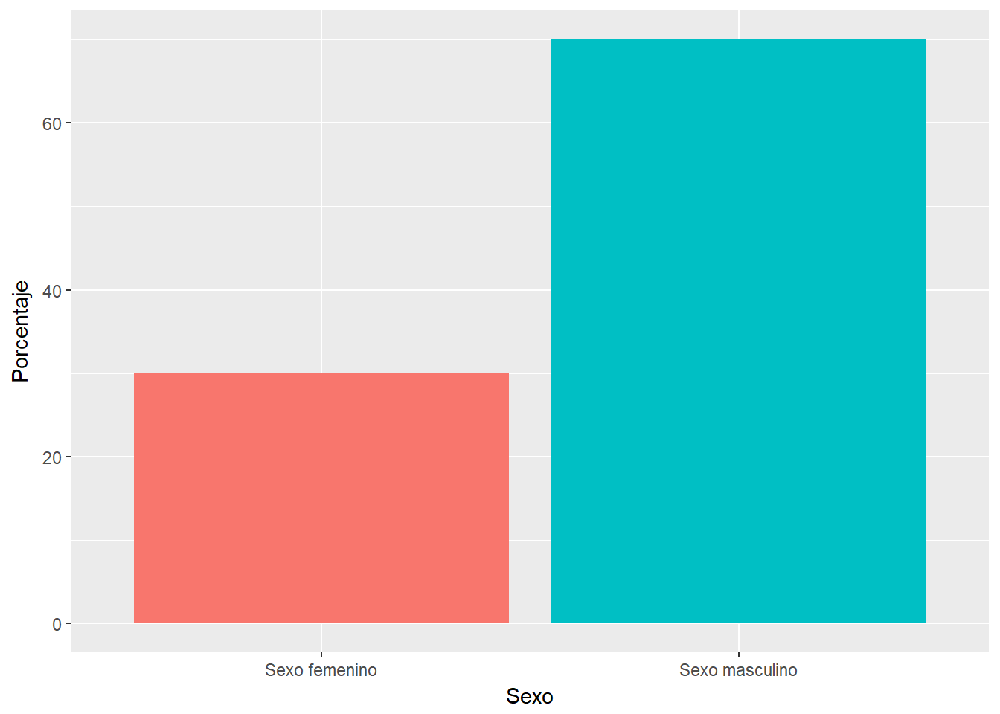
En cuanto a la evolución de los valores de la presión inspiratoria máxima (PiMax) utilizando el dispositivo de Threshold IMT previo al tratamiento observamos un promedio y DE de 75 cmH2O ± 16.12 cmH2O, un máximo de 95 cmH2O y un mínimo de 50 cmH2O. Posterior al tratamiento con el dispositivo del Threshold IMT observamos un promedio y DE de 92 cmH2O ± 13.66 cmH2O, un máximo de 110 cmH2O, y un mínimo de 75 cmH2O (Figura 2).
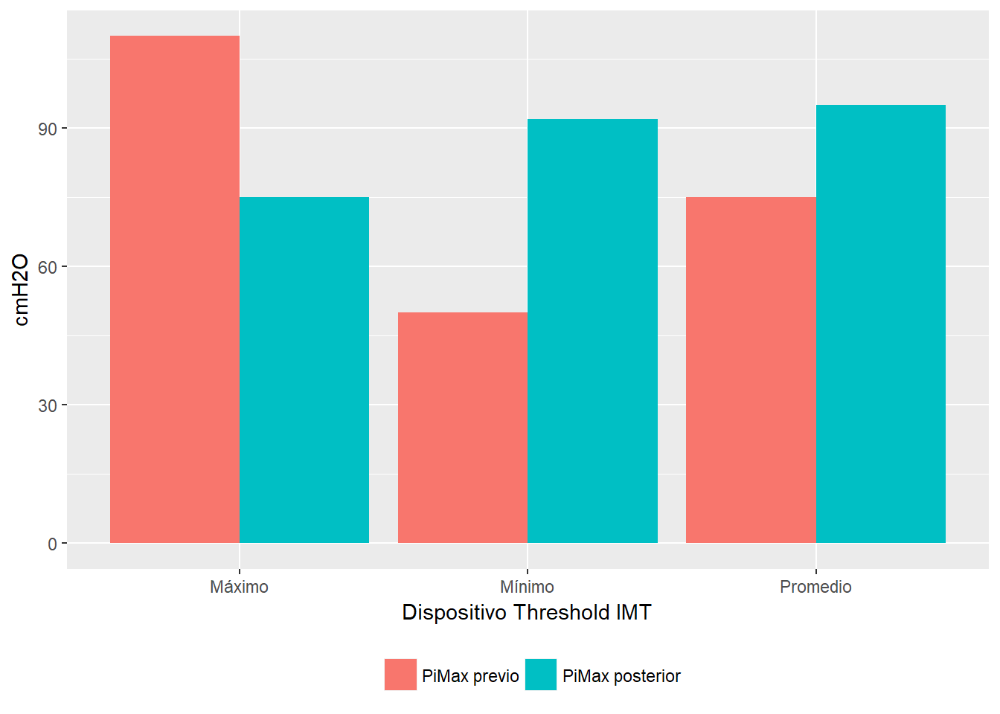
Los valores previos de PiMax en pacientes tratados con fisioterapia respiratoria convencional presentaron un promedio y DE de 62.5 cmH2O ± 16.58 cmH2O, un máximo de 80 cmH2O, y un mínimo de 40 cmH2O. Posterior al tratamiento con la fisioterapia respiratoria convencional observamos un promedio y DE de 86.25 cmH2O ± 22.87 cmH2O, un máximo de 110 cmH2O, y un mínimo de 60 cmH2O (Figura 3).
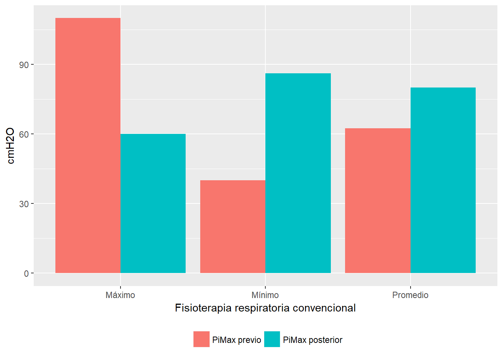
Asimismo en los valores de la presión arterial sistólica (PAS) con el entrenamiento utilizando el dispositivo Threshold IMT previo al tratamiento observamos un promedio y DE de 117 mmHg ± 8.16 mmHg, un máximo de 130 mmHg y un mínimo de 110 mmHg; posterior al tratamiento con el dispositivo Threshold IMT observamos un promedio y DE de 115 mmHg ± 8.37 mmHg, un máximo de 120 mmHg y un mínimo de 100 mmHg (Figura 4).
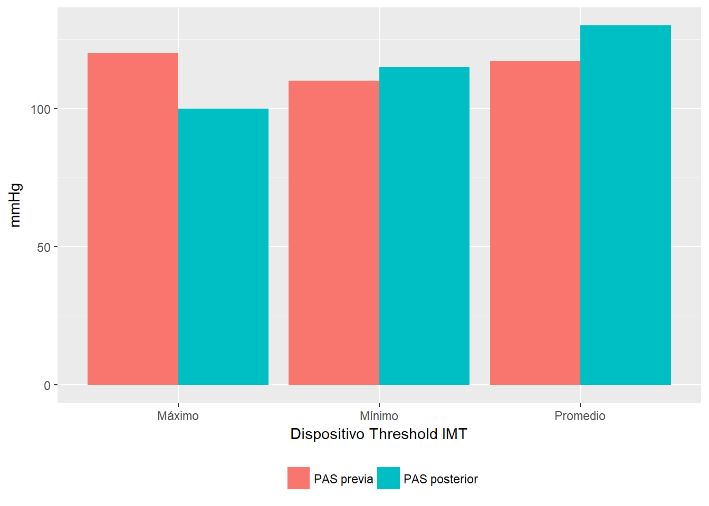
Los valores previos al tratamiento de la PAS con el entrenamiento de la fisioterapia respiratoria convencional presentaron un promedio y DE de 118 mmHg ± 9.57 mmHg, un máximo de 130 mmHg y un mínimo de 110 mmHg. Posterior al tratamiento con la fisioterapia respiratoria convencional observamos un promedio y DE de 115 mmHg ± 5.77 mmHg, un máximo de 120 mmHg y un mínimo de 110 mmHg (Figura 5).
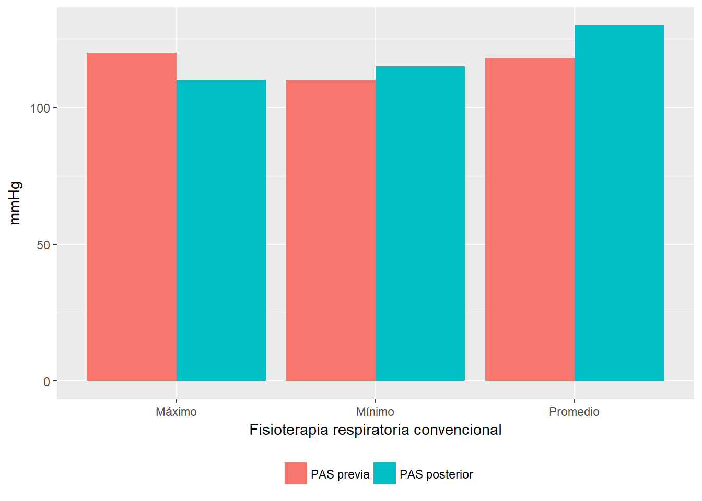
En los valores de la presión arterial diastólica (PAD) con el entrenamiento utilizando el dispositivo Threshold IMT previo al tratamiento observamos un promedio y DE de 70 mmHg ± 8.94 mmHg, un máximo de 80 mmHg y un mínimo de 60 mmHg. Posterior al tratamiento con el dispositivo Threshold IMT observamos un promedio y DE de 62 mmHg ± 7.53 mmHg, un máximo de 70 mmHg y un mínimo de 50 mmHg (Figura 6).
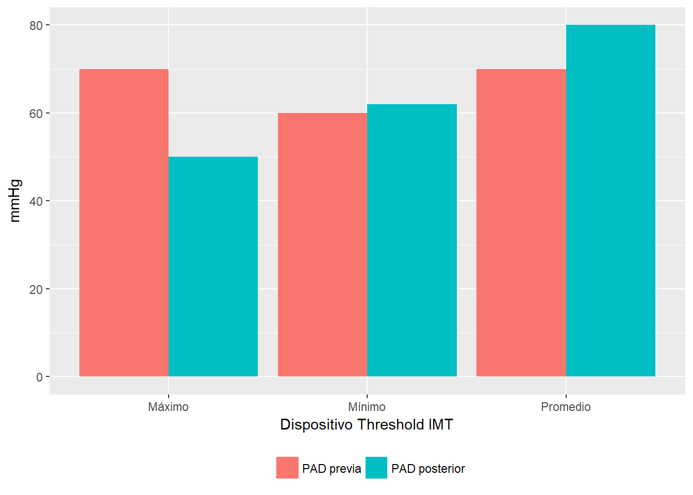
Los valores previos al tratamiento de la PAD con el entrenamiento de la fisioterapia respiratoria convencional presentaron un promedio y DE de 70 mmHg ± 11.55 mmHg, un máximo de 80 mmHg y un mínimo de 60 mmHg. Posterior al tratamiento con la fisioterapia respiratoria convencional observamos un promedio y DE de 62.5 mmHg ± 5 mmHg, un máximo de 70 mmHg y un mínimo de 60 mmHg (Figura 7).
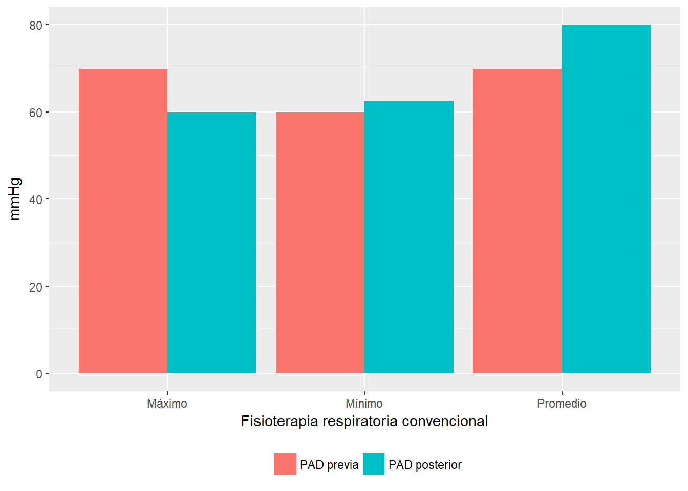
En los valores de la frecuencia respiratoria (FR) con el entrenamiento utilizando el dispositivo Threshold IMT previo al tratamiento observamos un promedio y DE de 18 rpm ± 1.47 rpm, un máximo de 20 rpm y un mínimo de 17 rpm. Posterior al tratamiento con el dispositivo Threshold IMT observamos un promedio y DE de 19 rpm ± 2.28 rpm, un máximo de 21 rpm y un mínimo de 16 rpm (Figura 8).
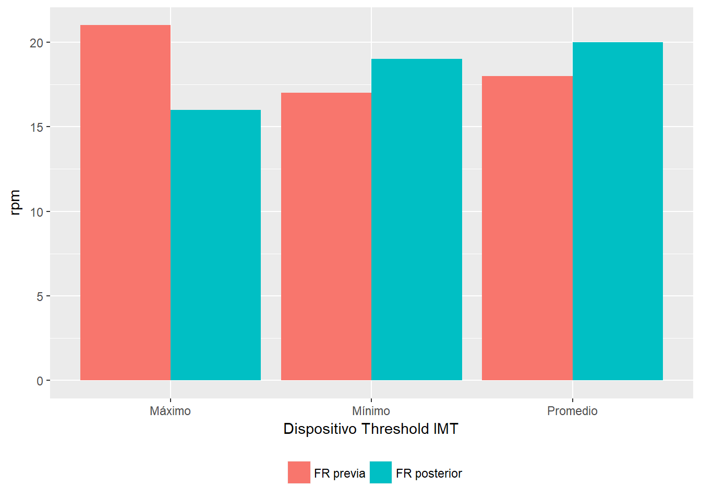
Los valores previos al tratamiento de la FR con el entrenamiento de la fisioterapia respiratoria convencional presentaron un promedio y DE de 20 rpm ± 2.65 rpm, un máximo de 23 rpm y un mínimo de 17 rpm. Posterior al tratamiento con la fisioterapia respiratoria convencional observamos un promedio y DE de 20 rpm ± 2.75 rpm, un máximo de 23 rpm y un mínimo de 17 rpm (Figura 9).
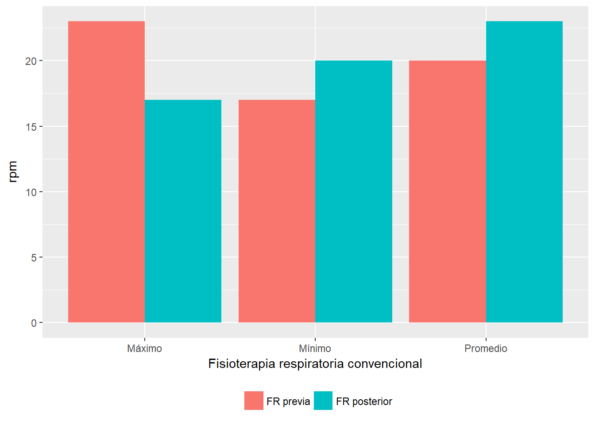
En los valores de la frecuencia cardiaca (FC) con el entrenamiento utilizando el dispositivo Threshold IMT, previo al tratamiento observamos un promedio y DE de 84 lpm ± 11.63 lpm, un máximo de 103 lpm y un mínimo de 68 lpm. Posterior al tratamiento con el dispositivo Threshold IMT observamos un promedio y DE de 84 lpm ± 9.61 lpm, un máximo de 98 lpm y un mínimo de 73 lpm (Figura 10).
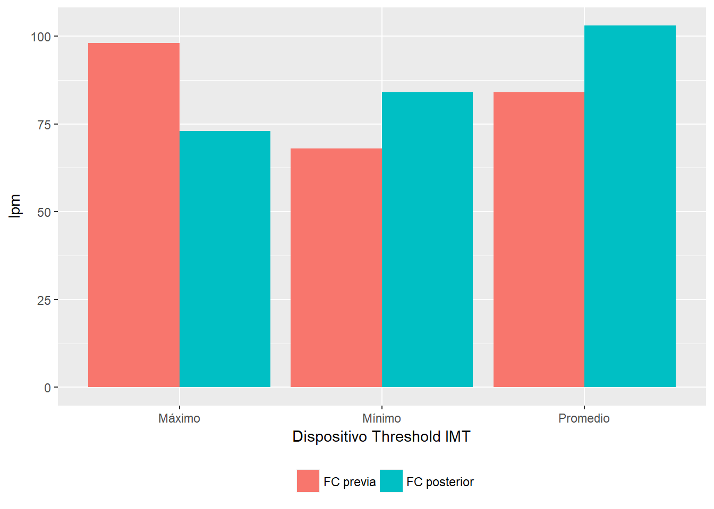
Los valores previos al tratamiento de la FC con el entrenamiento de la fisioterapia respiratoria convencional presentaron un promedio y DE de 85 lpm ± 6.08 lpm, un máximo de 90 lpm y un mínimo de 79 lpm. Posterior al tratamiento con la fisioterapia respiratoria convencional observamos un promedio y DE de 85 lpm ± 9.88 lpm, un máximo de 95 lpm y un mínimo de 73 lpm (Figura 11).
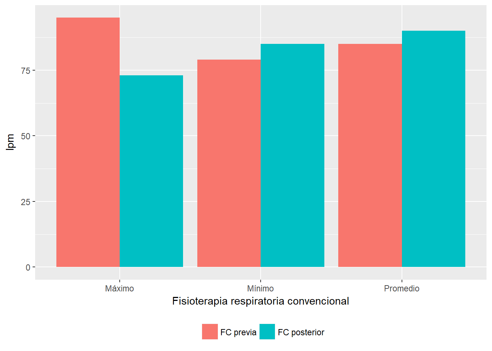
Los valores de saturación de oxígeno en sangre (SaO2) con el entrenamiento utilizando el dispositivo Threshold IMT previo al tratamiento observamos un promedio y DE de 98% ± 1.51%, un máximo de 99% y un mínimo de 95%. Posterior al tratamiento con el dispositivo Threshold IMT observamos un promedio y DE de 98% ± 0.82%, un máximo de 99% y un mínimo de 97% (Figura 12).
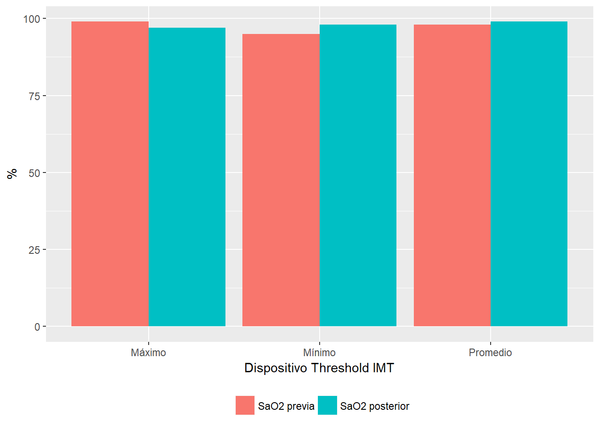
Los valores previos al tratamiento de SaO2 con el entrenamiento de la fisioterapia respiratoria convencional presentaron un promedio de 93% ± 5.5%, un máximo de 98% y un mínimo de 85%. Posterior al tratamiento con la fisioterapia respiratoria convencional, observamos un promedio de 98% ± 0.96%, un máximo de 99% y un mínimo de 97% (Figura 13).
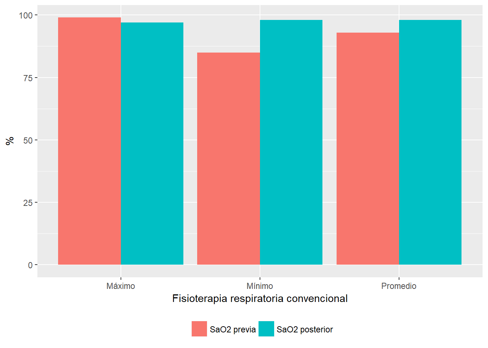
La duración de los días de tratamiento con el dispositivo Threshold IMT presentó un promedio de 5 días de tratamiento, con un mínimo de 5 días y con un máximo de 5 días; de los cuales fueron evaluados y tratados 6 pacientes durante 5 días. La duración de los días de tratamiento con la fisioterapia respiratoria convencional presentó un promedio de 5 días de tratamiento, con un mínimo de 5 días y con un máximo de 5 días; de los cuales fueron evaluados y tratados 4 pacientes durante 5 días.
Por último demostramos las evoluciones y altas de cada paciente, de 6 pacientes seleccionados para el entrenamiento con el dispositivo Threshold IMT, 6 pacientes fueron aumentando su PiMax y dados de alta final. Con el entrenamiento de la fisioterapia respiratoria convencional se observó que de 4 pacientes seleccionados, sólo 2 pacientes fueron evolucionando favorablemente y dados de alta final (Figura 14).
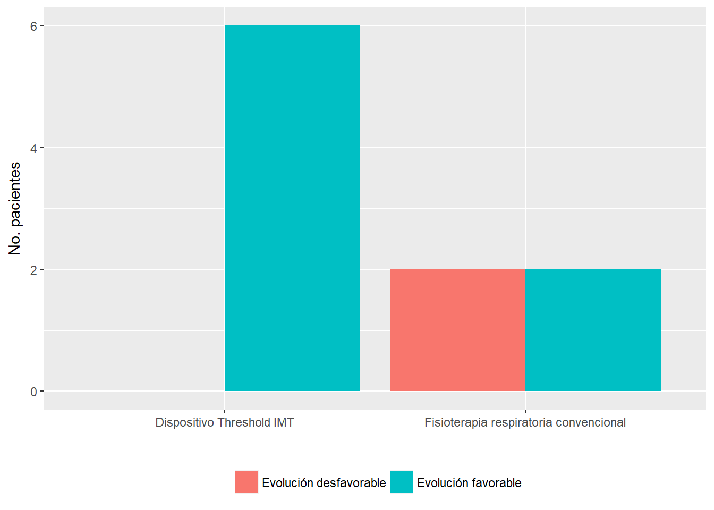
Los valores registrados de la PiMax adquiridos con el dispositivo de Threshold IMT eran significativamente mayores, a diferencia que con la fisioterapia respiratoria convencional que fue de menor significancia. Aquí observamos que con el entrenamiento realizado con el dispositivo Threshold IMT se logró obtener una efectividad en muy poco tiempo por el hecho de que el dispositivo posee una resistencia que brinda al paciente a realizar con más de esfuerzo la inspiración. Así mismo, podemos expresar que en el entrenamiento muscular inspiratorio formaría parte en obtener éstos efectos favorables en estos componentes que son la resistencia, el número de repeticiones, la frecuencia respiratoria, la duración del entrenamiento y la intensidad que es la carga que modifica la magnitud de la respuesta del Sistema Nervioso Autónomo (a mayor carga, mayor activación), lo cual se asocia probablemente con adaptaciones a largo plazo (SIIC).
En cuanto al entrenamiento realizado con el dispositivo del Threshold IMT notamos que la variación de disminución la PAS fue de menor significancia al finalizar el tratamiento, y que la variación de disminución de la PAD igualmente fue de menor significancia, a diferencia del entrenamiento con la fisioterapia respiratoria convencional, donde observamos que la variación de disminución PAS fue de mayor significancia. En cuanto a la variación de disminución de la PAD, observamos de igual manera una variación mayor significancia. De esta manera notamos que en cuanto a la PAS y la PAD con el entrenamiento realizado con la fisioterapia respiratoria convencional fue más efectivo ya que los mismos realizaban ejercicios respiratorios asistidos con miembros superiores e inferiores y diafragmáticos dos veces por día. Esto provocó una disminución de la presión arterial tras culminar los ejercicios, debido a la mayor exigencia de aporte de oxígeno durante el ejercicios. Es importante recordar que hacer los ejercicios físicos de forma moderada es altamente recomendable y forma parte del tratamiento de la hipertensión arterial por sus efectos beneficiosos sobre ésta, tal como en otros factores como ser el riesgo cardiovascular, problemas respiratorios, obesidad, diabetes, y otros (Aguilera).
En cuanto a los valores obtenidos de la FR y FC con el entrenamiento realizado con el dispositivo Threshold IMT observamos que su variación fue de menor significancia en ambos casos. Sin embargo, la variación de la SaO2 presentó una mayor significancia al término del tratamiento. En el entrenamiento con la fisioterapia respiratoria convencional observamos que la FR y FC presentaron una variación en aumento de mayor significancia, mientras que en la variación de aumento de la SaO2 vimos una menor significancia. Esto demuestra que con el entrenamiento realizado con la fisioterapia respiratoria convencional se provoca un mayor aumento de FR y FC debido a la mayor demanda de oxígeno por la exigencia de más grupos musculares con consecuente menor aumento en la SaO2 en relación al entrenamiento con el dispositivo Threshold IMT, donde no hubo mayor exigencia de grupos musculares, provocando así un mayor aumento de SaO2 con menor aumento de FR y FC (Guyton).
Al relacionar los grupos de entrenamientos y los números de alta hospitalarias durante el tiempo transcurrido del estudio, el 100% de los pacientes entrenados con el dispositivo Threshold IMT fue dado de alta, a diferencia del grupo con el entrenamiento de fisioterapia respiratoria convencional donde solo el 50 % de los pacientes fue dado de alta. Coincidentemente, el grupo entrenado con el dispositivo Threshold IMT obtuvo mayor efectividad en cuanto al aumento en la PiMax en un menor lapso de tiempo.
El objetivo general de esta investigación fue comparar la eficacia del dispositivo Threshold IMT utilizado para el entrenamiento muscular respiratorio versus la fisioterapia respiratoria convencional en pacientes que estuvieron internados en la Unidad de Terapia Intensiva Adultos “UTIA” del Instituto Nacional de Enfermedades Respiratorias y del Ambiente (INERAM), lo cual tuvo una significativa diferencia de eficacia desde el inicio y el alta final de los pacientes evaluados y tratados.
En cuanto a los objetivos específicos, Las evoluciones de los pacientes sometidos a tratamiento Kinésico convencional y con el dispositivo Threshold IMT, presentó favorables resultados en ambos tratamientos. Al evaluar la fuerza muscular inspiratoria mediante el Threshold IMT a pacientes sometidos a este tratamiento, se observó que la mayoría de los pacientes presentaron mejoría y una significativa mayor valoración de la Pimax con el tratamiento hecho.
Se ha observado en ambos grupos que durante el inicio hasta el final del tratamiento de cada paciente, la gran mayoría han demostrado un gran aumento de Pimax, pero con mayor significancia del dispositivo Threshold IMT. Ambos grupos de pacientes han manifestado una efectividad del entrenamiento muscular a lo largo del tratamiento lo cual se ha medido mediante la escala de Borg.
En cuanto a la importancia de la kinesiología respiratoria y la utilización del dispositivo Threshold IMT resultan muy favorables en la rehabilitación e inclusive utilizándolos en conjunto con otros dispositivos tienen mayor efectividad en menos tiempo en el paciente. De esta manera se logró un resultado favorable con el dispositivo Threshold IMT, los pacientes presentaron mejoría para la recuperación y reinserción a las actividades de la vida diaria con los pacientes que estuvieron internados en UTIA que pasaron a sala y finalmente su alta definitiva con un PiMax de evolución favorable en tan poco tiempo.
Se destaca la labor del Kinesiólogo dentro del conjunto multidisciplinario, ya que sin su participación primordial desde el inicio al final del tratamiento no lograremos una rápida mejoría del paciente.
Se recomienda que una vez dado de alta médica, se siga brindando rehabilitación respiratoria a todos aquellos pacientes que iniciaron el tratamiento hasta demostrar una evolución favorable de salud, y no sólo fijarse en las 10 sesiones primitivas, sino en su evolución kinésica de mejoría.
Facultad de Ciencias de la Salud, Universidad del Norte↩